Legend: IMPLEMENTED & TESTED capabilities exercised in the local PoC with automated/HTTP tests. PROPOSED production-target architecture (design only). NOT RUN designed/implemented but not executed in this environment.
BP requires an internet-banking platform to let customers query customers/products/historical movements, make own and interbank transfers, pay bills, integrate with a Core Banking system and a complementary customer-information system, send notifications through at least two mechanisms, offer a web SPA and a cross-platform mobile app, authenticate with an existing OAuth 2.0 product, integrate facial-recognition onboarding, support subsequent credential/biometric authentication, audit customer actions, provide persistence optimized for frequent customers, and expose an integration layer with an API Gateway and specialized services — all with security, decoupling, scalability, low latency, high availability, fault tolerance, disaster recovery, monitoring, and auto-healing.
The proposed solution is a domain-oriented, hexagonal, modular architecture deployed as a small set of decoupled services (not a microservice swarm), with the Core Banking system as the source of truth for balances, movements, and transactions. BP is a layer of experience, orchestration, and security; it never acts as the ledger.
Anchor decisions: AWS as the target cloud (ECS Fargate, Aurora PostgreSQL, ElastiCache Redis, EventBridge+SQS, CloudFront+WAF, API Gateway, Secrets Manager/KMS, S3 Object Lock); the existing OIDC IdP in production with Keycloak locally; a BFF with HttpOnly cookies for the web and Authorization Code + PKCE for mobile; financial integrity via idempotency keys, explicit transaction states, Transactional Outbox, and reconciliation; and an honest local equivalence that reproduces contracts, domains, flows, events, and logical security without simulating HA/DR guarantees it cannot provide.
A reproducible local Proof of Concept (pnpm monorepo: NestJS backend, React SPA, PostgreSQL, Redis, RabbitMQ, Keycloak, WireMock) implements and tests the nine priority flows. 28 unit tests, 17 functional E2E tests, and 4 real-authentication E2E tests pass; the SPA builds cleanly. This document distinguishes throughout what is implemented and tested from the proposed production architecture.
BP is a (fictitious) bank modernizing its internet-banking channel. Customers must self-serve common banking operations across web and mobile while BP integrates with its existing Core Banking system and a complementary customer-information system, and reuses an existing OAuth 2.0/OIDC identity product.
The Core Banking system owns financial truth. BP orchestrates experience and security, never duplicating or overriding the ledger. HTTP 200 ≠ settled, and a message queue never substitutes for the Core's transactional guarantees.
| ID | Requirement | Priority |
|---|---|---|
| RF-01/02/03 | Query customer, products, historical movements | Must |
| RF-04/05 | Own-account and interbank transfers | Must |
| RF-06 | Bill payments (initial payment scope — assumption) | Must |
| RF-07/08 | Core Banking and complementary-system integration | Must |
| RF-09 | Notifications via ≥2 mechanisms (email + push) | Must |
| RF-10/11 | Web SPA and cross-platform mobile app | Must |
| RF-12 | OAuth2/OIDC authentication (Authorization Code + PKCE) | Must |
| RF-13 | Facial-recognition onboarding (1:1 + liveness) | Must |
| RF-14 | Subsequent credential/biometric authentication (OS/passkeys) | Must |
| RF-15 | Audit of customer actions | Must |
| RF-16 | Persistence optimized for frequent customers (cache) | Must |
| RF-17 | Integration layer (API Gateway + specialized services) | Must |
| RF-19 | Idempotency of financial operations | Should |
| Category | Requirement |
|---|---|
| Security | TLS in transit, KMS at rest, MFA/step-up, PKCE for public clients, least privilege, source-account authorization |
| Transactional integrity | Consistency, idempotency, concurrency control, explicit states, reconciliation |
| Performance / latency | Low latency for frequent reads (cache-aside) |
| Availability / scalability | HA (Multi-AZ), horizontal auto scaling |
| Resilience | Fault tolerance, controlled degradation, retries, circuit breaking, bulkheads |
| DR | Defined RTO/RPO strategy |
| Observability | Metrics, structured logs, distributed tracing, alarms |
| Auditability | Append-only, queryable, integrity-verifiable log; minimization |
| Compliance | Subject to an undefined jurisdiction → not asserted (see §20) |
| ID | Assumption |
|---|---|
| S-A1 | Core Banking = source of truth for balances/movements/transactions. |
| S-A2 | Payment scope = bill payments (initial). |
| S-A3 | The Core supports idempotency propagation and/or operation-status lookup by reference. Pending (P-Core-01). |
| S-A4 | The production IdP supports standard OIDC (PKCE, JWKS, refresh, MFA); no proprietary features assumed. |
| S-A5 | Region us-east-1 assumed; data residency/jurisdiction to confirm. |
| ID | Risk | Mitigation |
|---|---|---|
| R-01 | Core as bottleneck / single point | Read cache, async, circuit breaker, bulkhead, degradation |
| R-02/03 | Transaction duplication / inconsistency | Idempotency (UNIQUE), explicit states, reconciliation |
| R-04 | Mishandling of PII/biometrics | Minimization, KMS, no biometric templates stored |
| R-05 | Secrets in public clients / OAuth misuse | Auth Code + PKCE, BFF, no secrets in the browser |
| R-07 | Compliance claims without a jurisdiction | No compliance asserted; aligned controls only |
| R-15 | Core lacks status lookup → UNKNOWN unresolved | Robust reconciliation; dependent on P-Core-01 |
bp-* names and bp.<domain>.<fact>.vN events across levels and code.Each decision carries at least two technical justifications and the alternatives considered (full detail in docs/architecture/DECISIONS.md, ADR-0001…0029).
| Layer | Choice | Justifications (2+) | Alternatives |
|---|---|---|---|
| Web SPA | React + TypeScript | (1) Shared types with backend/mobile; (2) flexible for the BFF+cookies pattern | Angular (heavier, less type reuse) |
| Mobile | React Native + TS | (1) Language/type homogeneity; (2) mature Keychain/Keystore + passkeys | Flutter (another language/talent) |
| Backend | NestJS + TS (hexagonal) | (1) Native modularity/DI maps to DDD; (2) TS homogeneity speeds the PoC | Spring Boot (banking standard, heavier); ASP.NET Core |
| Compute | ECS Fargate | (1) No node mgmt, auto-healing/scaling; (2) same image local↔prod | EKS (over-engineering); Lambda (cold starts/limits) |
| Operational store | PostgreSQL / Aurora | (1) ACID + unique constraints; (2) Multi-AZ, replicas, backups | RDS PG (less HA); DynamoDB (as AWS alternative) |
| Cache/session | Redis / ElastiCache | (1) Cache-aside with TTL; (2) BFF session store | In-process cache; Memcached |
| Messaging | RabbitMQ / EventBridge+SQS | (1) Covers pub/sub+DLQ semantics; (2) port swaps transport | SNS (subsumed); LocalStack (only if needed) |
| Identity | Existing OIDC IdP / Keycloak | (1) Standard OIDC+PKCE+MFA; (2) interchangeable via issuer/JWKS | Cognito/Auth0 (changes prod IdP) |
| Core simulator | WireMock | (1) Injects latency/failures/ambiguity; (2) versionable contracts | Custom Node mock |
Actors (BP Customer, Operator/Support) interact with the BP Digital Banking Platform, which integrates with external systems: the OIDC IdP, Core Banking, the complementary customer system, the facial-verification provider, and email/push providers. The Core and complementary systems are external systems of record/enrichment.
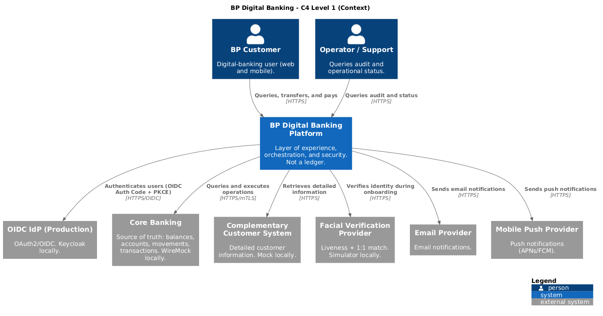
docs/architecture/workspace.dsl.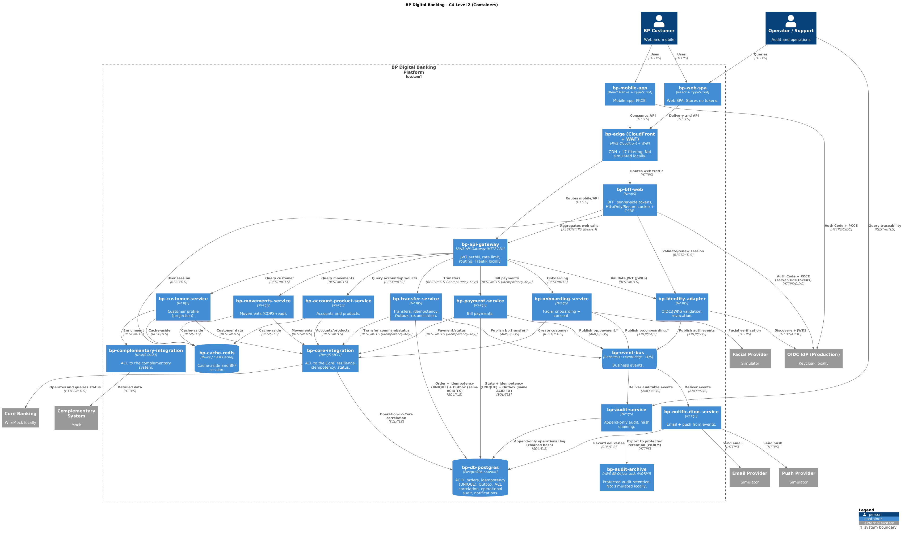
bp-* names are reused in code.| Container | Responsibility |
|---|---|
| bp-web-spa / bp-mobile-app | Web SPA (no tokens) / mobile app (PKCE) |
| bp-edge / bp-api-gateway | CDN+WAF edge / north-south JWT authN, rate limit, routing |
| bp-bff-web / bp-identity-adapter | Web BFF (server-side tokens, cookie+CSRF) / OIDC JWKS validation |
| bp-customer / account-product / movements | Profile, accounts/products, movements (read, CQRS-read) |
| bp-transfer / bp-payment | Financial command orders (idempotency, Outbox, states, reconciliation) |
| bp-core-integration / bp-complementary-integration | ACL to the Core / ACL to the complementary system |
| bp-onboarding / bp-notification / bp-audit | Facial onboarding / email+push / append-only audit |
| bp-db-postgres / bp-cache-redis / bp-event-bus / bp-audit-archive | ACID store / cache+session / events / WORM retention |
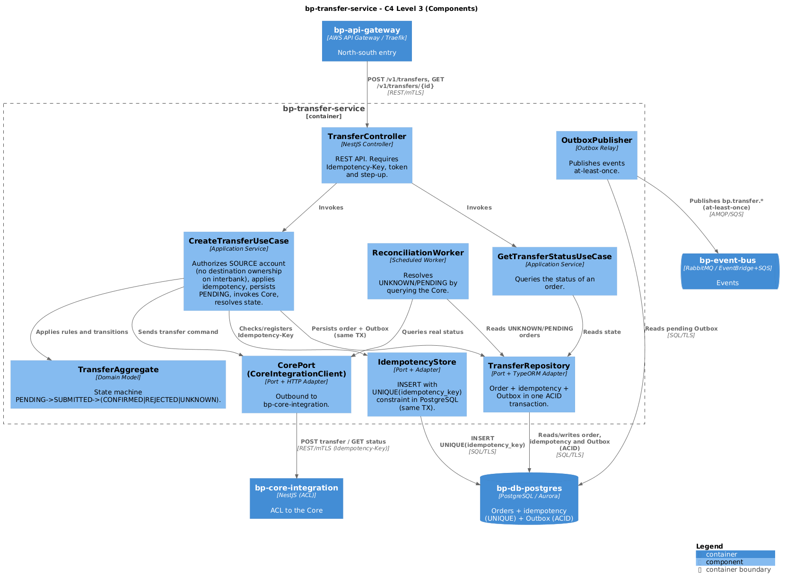
bp-transfer-service. Controller, use cases, aggregate/state machine, idempotency store (PostgreSQL UNIQUE), repository (ACID), CorePort to the ACL, Outbox publisher, and reconciliation worker.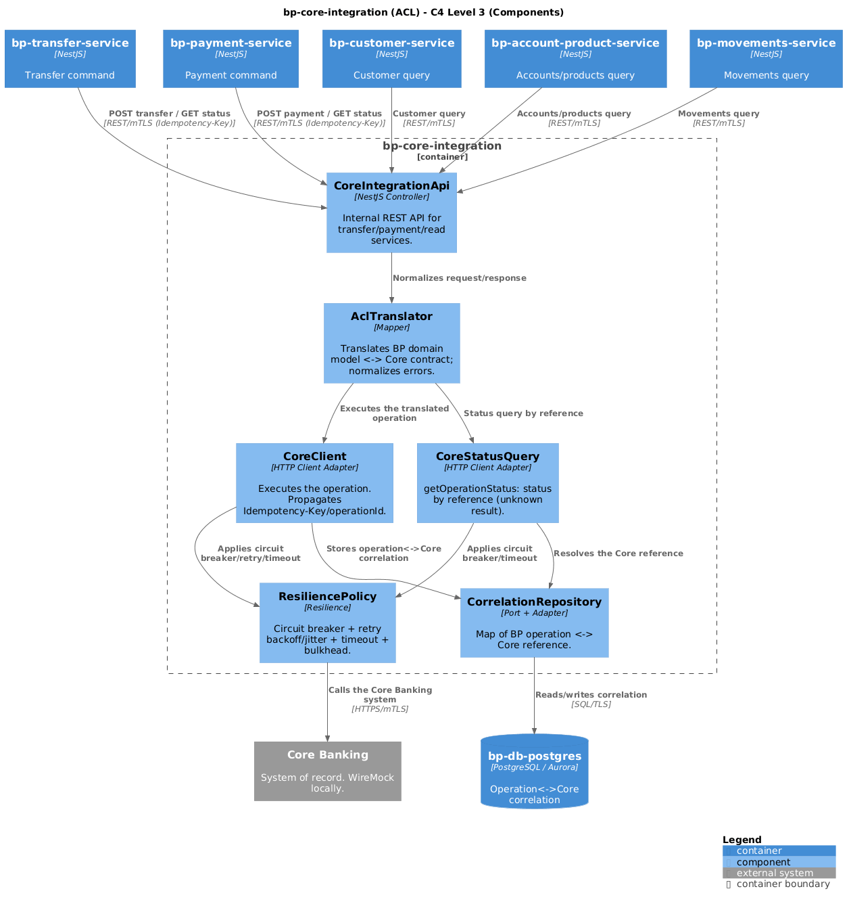
bp-core-integration (ACL): inbound API, translator, Core client, resilience policy (circuit breaker/retry/timeout/bulkhead), status query, and correlation repository.OAuth 2.0 is authorization; identity is provided by OpenID Connect. Public clients use Authorization Code + PKCE (no client secret in the client).
The SPA keeps no tokens. bp-bff-web runs Authorization Code + PKCE against the IdP, stores tokens server-side (Redis session) and issues an HttpOnly, Secure, SameSite=strict session cookie plus a CSRF token (double-submit, enforced on state-changing requests). This mitigates XSS token theft and CSRF. IMPLEMENTED & TESTED (backend token verification via JWKS validated; see §24).
Each service validates the token (JWKS), scopes, and source-account authorization; interbank transfers do not validate destination ownership (ADR-0021). Sensitive operations require a valid step-up ACR claim.
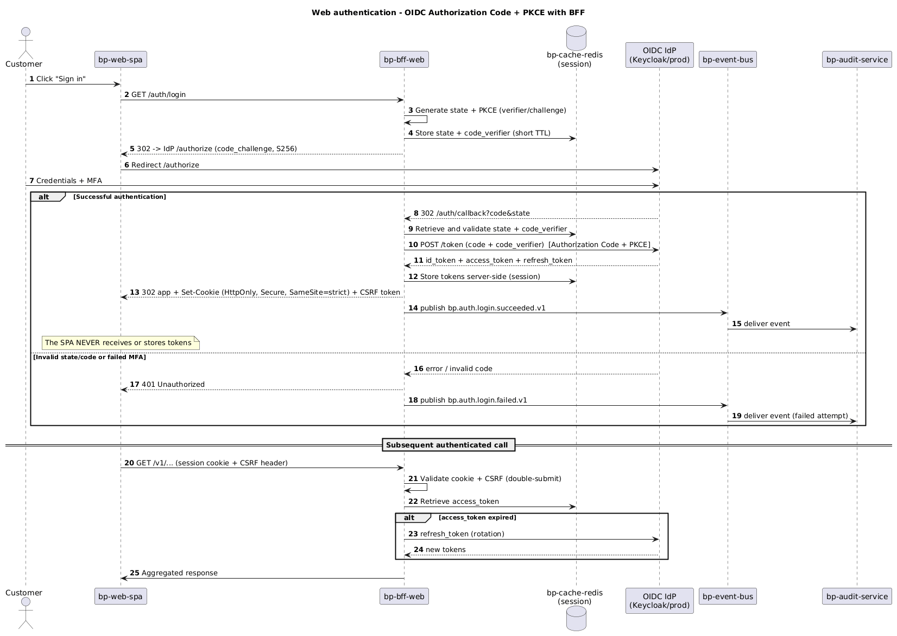
Mobile uses Authorization Code + PKCE as a public native client; the refresh token lives in Keychain/Keystore, the access token in memory.
bp-onboarding-service against the facial provider. BP stores only encrypted evidence/score references — no reusable biometric template.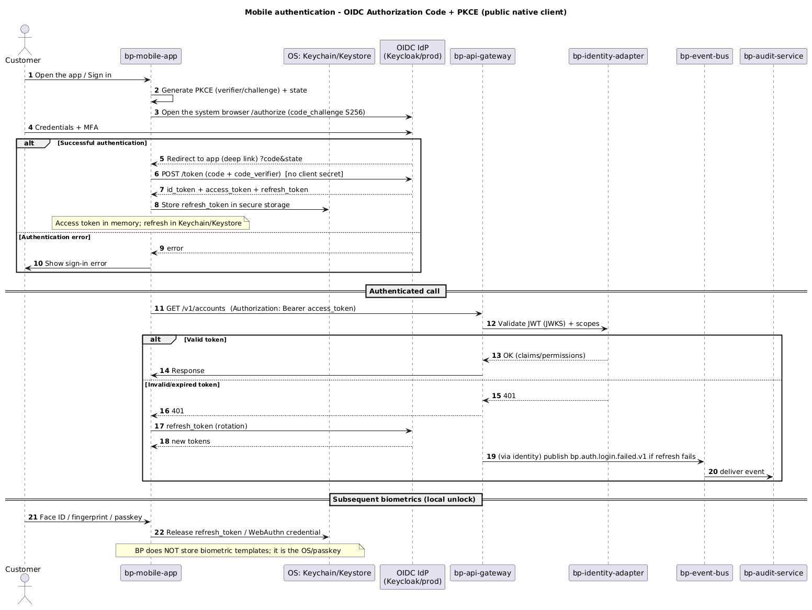
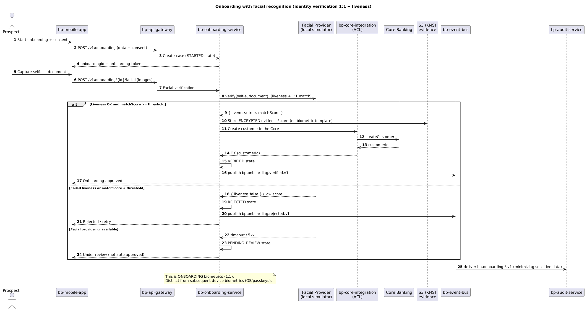
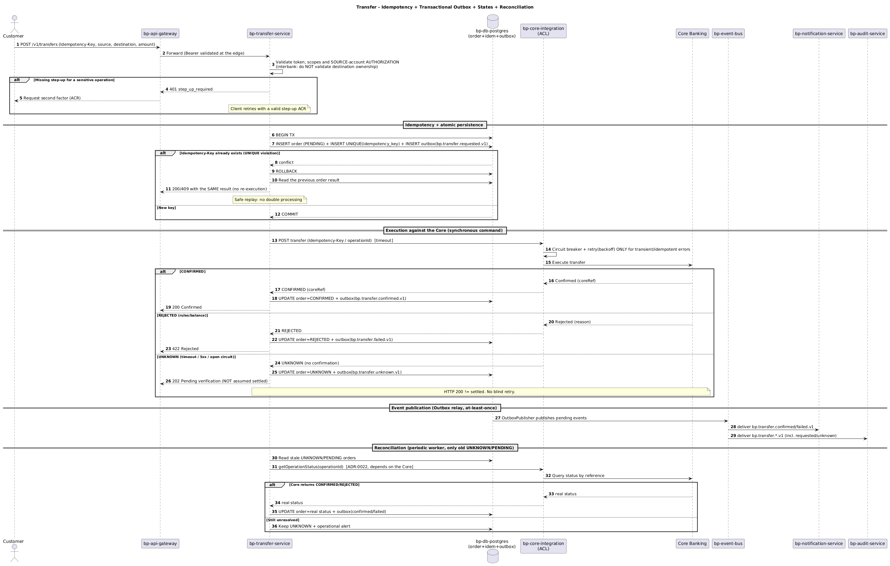
Idempotency-Key; order + idempotency row (UNIQUE) + Outbox event committed in one ACID transaction.PENDING → SUBMITTED → (CONFIRMED | REJECTED | UNKNOWN); UNKNOWN is resolved only by reconciliation.UNKNOWN (the client receives 202 "pending verification"); the Core command is never blindly re-sent.409.POST /internal/reconcile, ADR-0029): internal-token guard + Postgres advisory lock (no concurrent reconciliation of the same operation), status lookup by reference (never re-executes), attempt recording, events, and audit.| Domain | Source of truth | Platform persistence | Cache |
|---|---|---|---|
| Balances, movements, accounts, transactions | Core Banking (external) | Read projections/cache | Redis (profile, products, movement pages) |
| Order workflow state | Platform (Aurora) | Aurora (ACID) | — |
| Idempotency | Platform | PostgreSQL UNIQUE | — |
| Audit | Platform | Append-only + hash chain | — |
Cache-Aside (bp-movements-service): read → miss → Core via ACL → cache with short TTL; _cache: HIT|MISS exposed. Balances are treated as highly volatile (minimal/zero TTL; P-Core-02). Official bank data and auxiliary platform data are never conflated. IMPLEMENTED & TESTED (cache MISS→HIT verified).
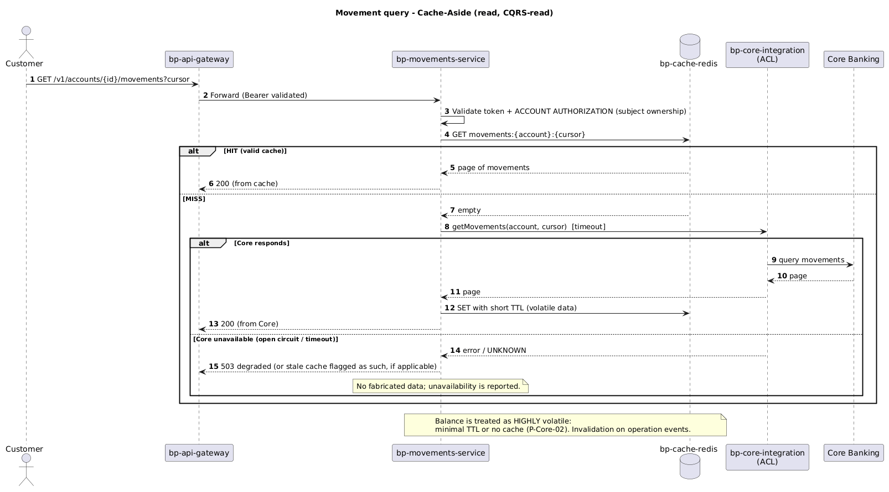
Audit records successes, failures, authentication attempts, rejected operations, and security events, with sensitive-data minimization (no passwords, tokens, secrets, or biometric data). The operational log is append-only with hash chaining (hash_n = SHA256(prevHash + record)) in PostgreSQL, enabling tamper detection; a separate protected WORM retention archive (S3 Object Lock) holds the long-term immutable copy.
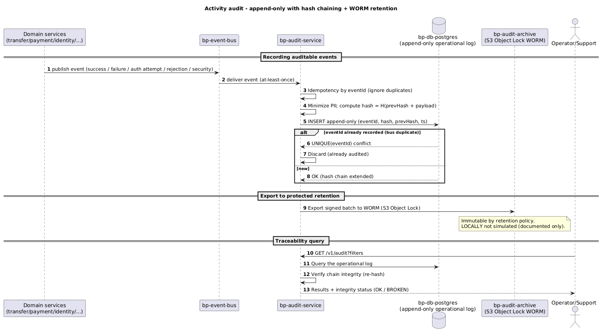
Notifications are a decoupled informational channel (event consumers), never on the transactional path. bp-notification-service consumes bp.transfer.confirmed/failed events and sends email + push, idempotently by eventId, with a Dead Letter Queue on provider failure. It never claims a transfer completed when the state is UNKNOWN/pending. IMPLEMENTED & TESTED (email+push recorded from events; duplicate and provider-failure paths covered).
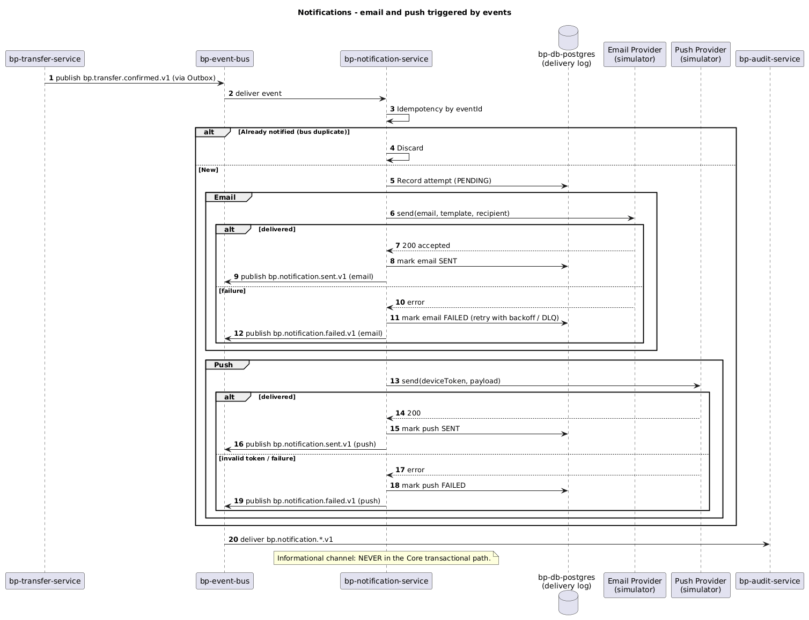
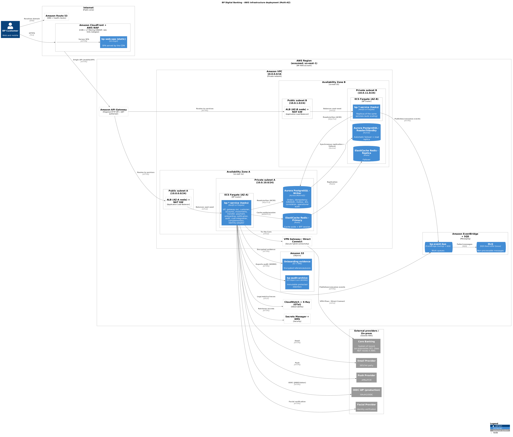
Clear separation between Internet (public), the VPC private network (public subnets with ALB/NAT; private subnets with ECS/Aurora/ElastiCache), regional managed services, the Core Banking system (not in AWS), and external providers. Core connectivity uses a private hybrid link (VPN IPsec baseline, Direct Connect for predictable latency/throughput — ADR-0023).
PROPOSED production design (not proven by local Docker).
| Scenario | Expected behavior |
|---|---|
| ECS task fails | ALB stops routing; the service launches a replacement (auto-healing); idempotency+Outbox prevent duplication/loss |
| AZ fails | ALB drains the AZ; Aurora failover to standby; Redis replica promotion; reduced capacity until scale-out |
| Aurora failover | Reader promoted; connections recycled; interrupted commands → UNKNOWN → reconciliation |
| Redis unavailable | Cache-aside falls back to the Core (higher latency, never wrong data); circuit breaker protects the Core |
| Core unavailable | Timeout + circuit breaker + bulkhead; reads degrade (503); commands → UNKNOWN; no blind retries |
| Notification provider fails | Retry/backoff → DLQ; the financial operation is unaffected |
PROPOSED. Baseline Backup & Restore (Aurora snapshots + PITR, replicated artifacts/IaC) with an optional Pilot Light (Aurora Global Database + minimal warm infra + Route 53 failover). Proposed objectives, to be validated with the business and the real Core capabilities:
| Objective | Proposed | Note |
|---|---|---|
| Availability (platform) | ~99.9% monthly | Cannot exceed the Core's limit |
| RTO (primary region) | ≤ 1–4 h | Depends on DR automation |
| RPO | ≤ 5–15 min | Aurora PITR; official data in the Core |
| Read latency p95 (cached) | < 300–500 ms | Reads via Redis |
PROPOSED for AWS; the PoC implements structured logging, correlation IDs, and health endpoints.
correlationId; structured JSON logs without unnecessary PII.PROPOSED. No current prices are included; docs/architecture/COSTS.md provides formulas and variables for AWS Pricing Calculator across compute, database, cache, networking, API Gateway, messaging, logs/observability, security, backups, and DR.
The PoC is a pnpm monorepo: a NestJS backend (hexagonal), a React SPA, and infrastructure in Docker (PostgreSQL, Redis, RabbitMQ, Keycloak, WireMock). It reproduces contracts, domains, flows, events, and logical security — not HA/DR guarantees.
| Responsibility | Local | AWS | Validated locally | Requires cloud |
|---|---|---|---|---|
| Edge/CDN/WAF | (not simulated) | CloudFront+WAF | — | WAF, edge latency, DDoS |
| Compute | NestJS (ts-node) | ECS Fargate | App logic, flows | Scale/HA |
| Operational store | PostgreSQL | Aurora | Schema, ACID TX, constraints | Failover, replicas, backups |
| Cache | Redis | ElastiCache | Cache-aside, TTL | HA, real latency |
| Messaging | RabbitMQ | EventBridge+SQS | Pub/sub, DLQ, retries | Routing, archive/replay, scale |
| Identity | Keycloak | Existing OIDC IdP | Auth Code+PKCE, JWKS | Proprietary IdP features |
| Core | WireMock | Real Core via ACL | Contracts, timeouts, ambiguity | Real settlement/reconciliation |
| Audit retention | (not simulated) | S3 Object Lock (WORM) | — | Immutable retention |
| HA/DR | (not simulated) | Multi-AZ, DR | Nothing | Everything |
Event contracts are kept transport-agnostic via an EventBus port (RabbitMQ ↔ EventBridge+SQS), so RabbitMQ validates the semantics without being presented as a 1:1 equivalent of SNS+SQS+EventBridge.
Results are real; PASS/FAIL/NOT RUN are never invented. Full detail in docs/TESTING.md.
| Suite | Count | Result |
|---|---|---|
| Unit — domain (state machine, idempotency, cache-aside, audit hashing) | 17 | PASS |
| Unit — api (TransferService scenarios, NotificationHandler) | 11 | PASS |
| Functional E2E (Supertest, Docker infra, DEV_AUTH_BYPASS) | 17 | PASS |
| Real-auth E2E (no bypass, real Keycloak token + JWKS) | 4 | PASS |
| Check | Result |
|---|---|
| API typecheck (tsc) | PASS |
| Web build (tsc + vite build) | PASS (44 modules) |
| docker compose config | PASS (6 images) |
| Structurizr DSL validate | PASS |
| Model validator (validate.mjs) | PASS |
| Diagram render (17 images) + visual inspection | PASS |
Selected ADRs (full set: docs/architecture/DECISIONS.md, ADR-0001…0029). Each carries ≥2 justifications and alternatives.
| ADR | Decision | Key trade-off |
|---|---|---|
| 0010 | BFF for the web SPA | Extra container + server-side sessions vs. token safety |
| 0014 | Hexagonal + single ACL to the Core | Translation layer vs. isolation/resilience |
| 0015/0016 | Idempotency keys + Transactional Outbox | At-least-once (idempotent consumers) vs. no dual-write/lost events |
| 0017/0022/0029 | Reconciliation (endpoint + advisory lock) | Depends on Core status lookup (P-Core-01) |
| 0018 | Append-only audit + WORM retention | WORM not simulated locally |
| 0019 | PostgreSQL ACID (DynamoDB as AWS alternative) | One engine (simplicity) vs. Dynamo TTL/scale |
| 0021 | Source-account authorization | Correct interbank semantics (no destination ownership) |
| 0026 | ts-node + DEV_AUTH_BYPASS (PoC only) | Fast iteration vs. must be disabled in prod |
| # | Criterion (reconstructed) | Where addressed | Status |
|---|---|---|---|
| 1 | Customer/product/movement queries | §8, §14; bp-customer/account/movements | Implemented & tested |
| 2 | Transfers (own + interbank) | §13; bp-transfer-service | Implemented & tested |
| 3 | Bill payments | §3, §8; bp-payment-service | Designed (pattern mirrors transfer) |
| 4 | Core Banking integration | §10; bp-core-integration (ACL) | Implemented & tested (WireMock) |
| 5 | Complementary-system integration | §8; bp-complementary-integration | Implemented & tested (mock) |
| 6 | Notifications (≥2 mechanisms) | §16; email + push | Implemented & tested |
| 7 | Web SPA + cross-platform mobile | §8, §23; apps/web (built), apps/mobile (reserved) | SPA implemented; mobile reserved |
| 8 | OAuth2/OIDC authentication (PKCE) | §11; BFF + JWKS | Backend tested; browser flow NOT RUN |
| 9 | Facial-recognition onboarding | §12; bp-onboarding-service | Designed (simulated) |
| 10 | Subsequent credential/biometric auth | §12; OS/passkeys | Designed |
| 11 | Action auditing | §15; bp-audit-service | Implemented & tested |
| 12 | Persistence optimized for frequent customers | §14; cache-aside (Redis) | Implemented & tested |
| 13 | Integration layer (API Gateway + services) | §8; bp-api-gateway + domain services | Implemented & tested (local gateway) |
| 14 | Security/decoupling/scalability/latency/HA/FT/DR/monitoring/auto-healing | §17–§21 | Design; logic tested, HA/DR proposed |
| 15 | C4 documentation (Context/Container/Component) + complementary diagrams | §7–§10; 7 sequences; AWS deployment | Implemented (rendered & validated) |
The proposed architecture is a defensible, domain-oriented, hexagonal design that keeps the Core Banking system as the source of truth and prioritizes financial integrity, security, resilience, and traceability over unnecessary complexity. The AWS target architecture provides HA, scalability, observability, and a credible DR path, while a reproducible local PoC implements and tests the priority flows end-to-end (idempotent transfers with reconciliation, cache-aside, event-driven notifications, append-only audit, and real token-level authentication).
The submission clearly separates implemented-and-tested capabilities from the proposed production architecture, makes no unverified availability/DR/compliance/cost claims, and preserves full traceability from the C4 model to the code via consistent bp-* and event naming. It is suitable for evaluation by a senior solutions architect and ready to evolve toward production with the open items (P-Core-01, IaC, interactive OIDC validation) resolved.
bp.transfer.requested/confirmed/failed/unknown.v1, bp.payment.requested/confirmed/failed.v1, bp.onboarding.verified/rejected.v1, bp.auth.login.succeeded/failed.v1, bp.auth.stepup.required/completed.v1, bp.security.suspicious.v1, bp.notification.sent/failed.v1. Common envelope: eventId, occurredAt, correlationId, idempotencyKey, producer, schemaVersion, payload. Delivery at-least-once (Outbox) → idempotent consumers.
apps/{api,web,mobile}, packages/{contracts,domain,shared}, infrastructure/{docker,mocks,keycloak,scripts}, docs/{architecture,API.md,TESTING.md,WORKLOG.md}, docker-compose.yml.
GET /v1/customers/me, GET /v1/accounts, GET /v1/accounts/:id/movements, POST /v1/transfers + GET /v1/transfers/:id, GET /v1/audit, BFF /auth/{login,callback,session,logout}, internal POST /internal/reconcile. Full reference: docs/API.md.
ADR-0001…0029 in docs/architecture/DECISIONS.md (cloud, stack, patterns, idempotency/Outbox, reconciliation, audit, source-account authorization, English-only policy, reconciliation endpoint).
corepack pnpm install → pnpm env:up → pnpm migrate && pnpm seed → pnpm test / pnpm --filter @bp/api test:e2e. Full instructions: README.md.